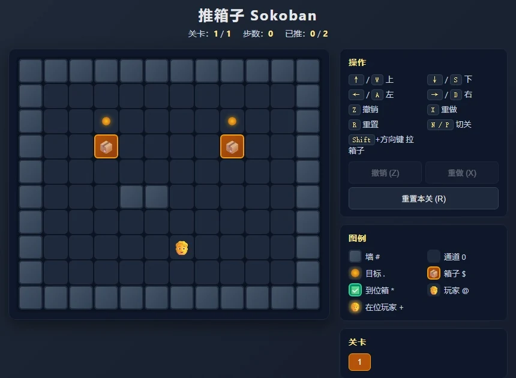
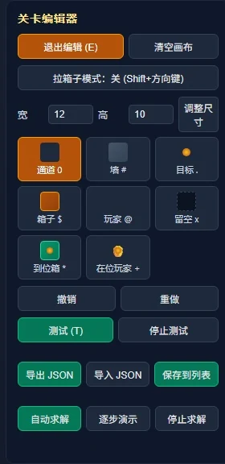

让设计进入生产流程Less repetition. More room to build.
在《暗区突围》手游参与活动配置与迭代：为艾薇塔活动快速搭建推箱子 Demo，为少前 2 联动局外活动制作文本自动化配置工具。

01从活动配置的重复环节找到工具入口
在腾讯《暗区突围》手游项目的产品一组实习期间，我参与活动相关系统配置、生产版本迭代与问题排查。实习时间为 2026.05—08；网页原型从 6 月开始，配置自动化集中在 7—8 月。工具来自实际工作里的重复动作：内容变更后重新录入、反复对齐字段，以及设计与客户端之间确认行为。
这两项工程工作分别来自具体活动：艾薇塔活动对应推箱子 Demo 的快速搭建，少前 2 联动的局外活动对应文本自动化配置。前者让方案先变得可玩，后者把叙事内容转换为可检查的节点／对白数据。
| 活动 | 我的工作 | 主要输出 |
|---|---|---|
| 艾薇塔相关活动 | 快速搭建推箱子 Demo，支持规则体验与关卡验证 | 网页原型、编辑／测试与 JSON 关卡数据 |
| 少前 2 联动 · 局外活动 | 将结构化文本自动转换为活动配置 | Python 工具、Excel 节点／对白配置与回读检查 |
活动画面说明工具服务的内容背景；原型输出 JSON，而文本自动化处理 Excel 配置，两者各自衔接不同的生产环节。
02艾薇塔：快速搭建推箱子 Demo
艾薇塔活动是我负责的活动之一。其中，推箱子 Demo 用于快速把玩法规则转成可操作的体验，让讨论可以围绕具体局面、操作步骤和完成条件展开。


网页推箱原型把角色、箱子、目标与地图组织为可交互状态。输入首先受到地形和占位约束，再更新角色／箱子位置并检查完成条件。可玩的原型让策划讨论可以指向具体操作序列，而不只依赖静态示意。
调整地图，在浏览器中直接尝试规则。
撤销／重做支持比较与修正操作。
导入／导出关卡，衔接配置和调试。
原型包含关卡编辑、历史快照、导入／导出与求解演示入口。撤销需要恢复完整局面，推箱行为也要保持箱子与角色的一致性；只记录一个坐标会使回退后的规则难以验证。
编辑、测试与导出放在同一个入口
编辑器可以选择地形、目标、箱子和玩家，调整地图尺寸，再进入测试。右图为本地实际运行的编辑器控件；这里加载自制测试关卡，展示工具结构。
JSON 用 LevelMap 组织关卡，以 X／Y 表示尺寸、Sign 保存字符地图，并附带 Rules 说明。规则、地图和尺寸保存在同一份结构中，便于生成、导入和检查，而不是依赖再次手工描图。
求解演示如何避免阻塞界面
求解器用队列探索候选箱子布局，检查玩家能否抵达推箱位置，并加入基础死锁剪枝。搜索放在 Web Worker 中运行，向主界面回报进度与推箱步骤；这种组织让搜索和界面响应分开。当前实现属于原型辅助，不宣称对任意关卡的最优性或完备性。


| 原型能力 | 解决的工作问题 |
|---|---|
| 直接体验与完成判断 | 让规则讨论对应可重复的操作 |
| 关卡编辑与导入 | 减少把地图变化再次转述给实现方的成本 |
| 撤销／重做 | 保留试错路径，方便比较局面 |
| JSON 导出 | 将已体验的地图结构交给后续配置与检查 |
03少前 2 联动：局外活动文本自动化

这项工具服务少前 2 联动的局外活动配置。叙事文本需要进入节点与对白关系，内容修改又会带来同步和检查工作；我将这些重复环节整理为读取、解析、生成和回读流程。这里的个人参与范围是局外活动配置，不据此延伸为联动角色或局内战斗实现。
自动化工具使用 Python、Tkinter 与 openpyxl。界面组织输入选择与生成操作；解析层读取结构化叙事内容，抽取文本、角色和语音等字段，整理为后续生成所需的数据关系。工具不依赖把自由文本直接交给模型猜测配置。
将解析、生成计划和写出分开，可以先检查内容是否被正确理解，再处理节点／对白之间的关联，最后适配具体模板。源文档更新时，重新解析和生成比逐项手工同步更容易保持对应关系，但仍需检查新增内容和资源映射。
| 环节 | 输入／输出 | 检查重点 |
|---|---|---|
| 读取与解析 | 源内容 → 标准字段 | 角色、文本、语音及结构是否可识别 |
| 生成计划 | 字段 → 节点与对白关联 | ID 与引用是否符合当前生成逻辑 |
| 模板写出 | 计划 → 新配置表 | 字段映射、模板样式、输出命名 |
| 保存后回读 | 生成文件 → 结构核对 | 实际落盘内容是否与预期一致 |
04从“只生成对白”到节点自动生成
早期手册描述的是先手工维护节点，再由工具生成对白。后期源码已经加入节点自动生成、模板字段映射、ID 检查、新文件命名与保存后回读。对照两份材料后，可以确认这是持续迭代，不能按旧手册推断最新能力仍只有对白导出。
因此，案例使用“解析—计划—写出—回读”的结构说明当前实现。它强调输出可以检查，而不把所有业务正确性都交给一个生成按钮：当前工具的校验覆盖部分字段与 ID，角色资源映射也允许为空。业务语义、最终表现和版本兼容仍需要人工验收。
自动化减少重复录入，也必须留下能定位问题的检查入口。
05让工具能被下一位使用者继续维护
除了工具本身，我将使用方式和工作流整理到内部 Wiki 与交接材料。可复用的文档需要说明输入约定、依赖模板、生成位置和常见错误；否则只要内容格式变化，维护者就可能回到手工修改。
我的工作
参与活动系统配置与排查，为艾薇塔活动快速搭建推箱子 Demo，为少前 2 联动局外活动制作文本自动化配置工具，并整理使用文档。正式岗位为产品一组实习生。
协作与基础
基于既有产品、配置规范和工程工具工作；活动、美术与完整产品为团队成果。本页不展示内部配置表或完整业务实现。
这段经历让我把设计和工程看成连续工作：需求需要被表达，规则需要被体验，内容需要进入数据，而输出还需要被下一次版本修改。工具的价值也体现在这个循环是否更清楚、更容易维护。